만년필이 궁금하세요?
고급필기구의 진정한 가치를 말해주는 브랜드 스토리를 모았습니다.
-
만년필 명가(名家)의 탄생
인류의 위대한 발명품 중에는 생활 속의 작은 불편함에서 시작되는 경우가 많다.
만년필의 명가 파카(Parker)의 시작도 미국의 한 도시에서 교사로 재직하던 평범한 남자의 생각의 전환에서 시작되었다.
1888년, 교사로 재직하던 조지 새포트 파카(George Safford Parker)는 부업으로 만년필을 판매했다. 그런데 당시 만년필들은 잉크가 자주 새는 문제점이 있어 고객들은 늘 불만이었고, 결국 그는 자신이 직접 만년필을 만들기로 결심한다. 계속되는 연구와 실패를 거듭한 끝에 1894년, 잉크 유출방지 기술인 “Lucky Curve” 시스템을 발명하여 특허를 받게 된다. 이것이 오늘날 파카의 탄생인 것이다.역사의 중심에 선 파카
필기는 역사를 발전시키는 중요한 수단이 되었으며 파카는 그 중심에 서 있었다. 20세기 초 미국경제가 급성장하는 동안, 만년필은 단순한 필기구에서 나아가 개인의 스타일을 대변해 주는 액세서리가 되었다.
파카 역시 금과 은은 물론 진주 등으로 세공한 만년필로 트랜드를 이끌었다. 그 당시 읽고 쓸 수 있었던 사람은 지식인층으로 한정되어 만년필의 소유자체가 교양있는 사람임을 보여주는 상징이었다.
그 후 제 1차 세계대전으로 미국은 경제위기를 맞이하게 되지만 반면 필기구 산업은 전성기를 맞게 된다.
가족들에게 편지를 쓰기 위해 펜이 필요했던 군인에게 파카가 펜을 제공했기 때문이다. 전쟁을 거치며 큰 성장을 이룩한 파카는 끊임없는 연구를 통해 듀오폴드, 파카51 등 그 장시를 대표하는 아이콘적인 모델을 선보이면서 그 명성을 이어가게 된다.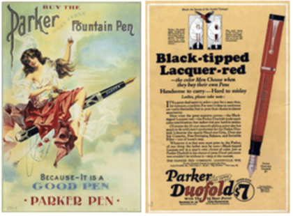파카를 사랑한 사람들
파카 펜은 100여 년 동안 경제계, 정계, 그리고 예술계의 리더들로부터 사랑을 받아왔다.
셜록홈즈의 작가 아더 코난 도일경은 1920년대에 내가 평생 찾던 펜은 바로 파카라고 할 만큼 파카펜을 애용했고, 마가렛 대처 전 영국수상은 1988년 파카의 영국공장을 방문하고 “어린시절, 파카펜을 갖는 것은 나의 꿈이었으며, 지금도 모든 서명에 G7 정상회담 때 받은 듀오폴더 펜을 사용한다.” 고 밝힌 바 있다.
또한 파카펜은 역사적으로 중요한 순간에도 사용되었다.
맥아더 장군은 태평양 전쟁 당시 일본의 항복문서에 서명할 때 그의 20년 된 파카듀오폴더펜을 사용했다.
1990년 6월 부시 대통령과 고르바쵸프 대통령은 백악광네서 파카 펜으로 자유 무역 협정을 체결하고 사실상 냉전을 종식 시켰고, 영국 왕실은 파카를 공식 지정펜으로 사용하고 있다. -
세기를 뛰어넘는 가치를 지닌 펜
프랑스 명품 만년필, 워터맨은 세계최초의 만년필을 발명한 이래,
125년간의 긴 세월 동안 창의적이고 혁신적인 만년필로 필기구의 역사에 끊임없는 놀라움을 안겨주었다.
워터맨만의 뛰어난 디자인과 탁월한 기능이 결합된 컬렉션 펜들은 본향인 프랑스의 우아한 품격을 담아 시공간을 초월하여
전세계 많은 사람들에게 인생의 동반자로 사랑 받아왔다.워터맨, 만년필의 역사를 열다
1883년 뉴욕에서 보험 외판원으로 일했던 루이스 에드슨 워터맨(Lewis Edson Waterman) 은 중요한 계약 중 펜의 잉크가 흘러 계약을 망치게 된다.
이후 잉크가 흐르지 않는 펜을 만들겠다고 결심을 하여 세계 최초로 모세 현상을 이용한 만년필을 만들게 되었다.
이 모델이 세계 최초의 만년필, 레귤러(REGULAR) 만년필이다.
평범한 보험 판매원의 노력으로 만년필의 역사와 워터맨의 역사가 시작된 것이다.
워터맨은 현대식 만년필의 성능을 갖춘 최초의 만년필로써
1884년 특허를 받은 후 100년 넘게 그 사랑을 이어나가고 있다.
1885년 워터맨의 한 고객의 권유로 광고를 시작하였고,
그 결과 수요가 급증하여 첫 공장이 설립되었으며, 1954년에는 워터맨의 모든 생산공장이 미국에서 프랑스로 옮겨졌다. 프랑스 특유의 독특한 디자인과 고급 귀금속을 사용하며 고유의 품격을 지켜온 워터맨은 현재도 15번 이상의 까다로운 수공작업으로 만년필을 제작하고 있다.
최고의 품질을 위한 워터맨의 집요한 노력이야 말로 워터맨을 1세기가 넘는 긴 세월을 지난 오늘날에도 최고의 명품으로 불리게 하는 원동력이다. 워터맨은 앞으로도 시대를 뛰어넘는 창의적이고 혁신적인 디자인과 기능으로 명품 만년필의 세계를 이끌어 나갈 것이다.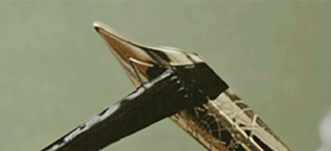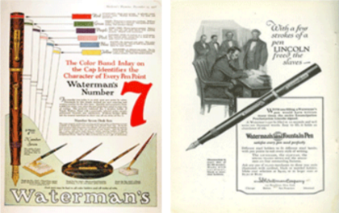한국 명품만년필 시장을 이끌다
워터맨은 1994년 국내에 첫 선을 보인 이후,
만년필의 명품으로 자리를 잡으며 다양한 연령층의 고객들에게 사랑 받고 있다.
워터맨의 품질과 가치, 세련된 디자인이 고급스러운 취향의 한국 소비자들에게 어필하였고, 자신만의 독특한 필체로 개성을 표현하고자 하는 시대의 트랜드도 한몫 하였다.
프랑스 스타일을 대표하는 만년필 워터맨은 명품의 가치를 한국에서도 이어가고 있는 것이다.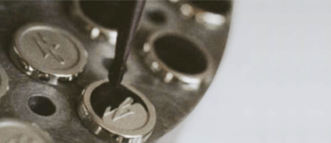 -
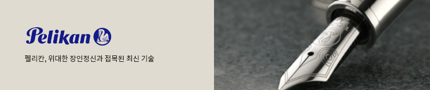
1838년 시작된 펠리칸의 역사
펠리칸의 역사 1838년으로 거슬러 올라갑니다.
1838년 화학자인 Carl Hornemann이 화가를 위한 물감과 미술용품을 제작하기 시작하면서 펠리칸의 역사는 시작되었습니다.
화학자 Gunther Wagner가 회사를 인수하면서 Wagner 가문의 상징이었던 펠리칸을 모든 제품에 표기하였으며
이것이 공식적인 상표가 되었습니다.세계적인 필기류의 명품, 펠리칸
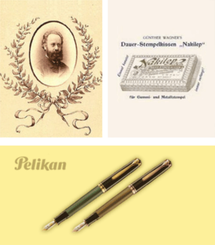상업가인 Fritz Beindorff가 1895년에 회사를 인수한 후, 펠리칸은 성장하기 시작하였습니다. 만년필 잉크, 수채화 물감, 그리고 다양한 종류의 접착제 등 새로운 제품들이 성공적으로 출시되면서 펠리칸은 점차 국제적으로 명성을 얻기 시작하였습니다.
1929년 “Stressmann”이라 불렸던 전설적인 흑/녹 줄무늬의
만년필이 탄생하였으며 현재는 세계적인 필기류의 명품으로 인정받고 있습니다.
1959년에서 1975년 사이에 전설적인 르네상스의 흑/녹 만년필 400시리즈가 펠리칸의 새로운 성공의 시작이 되었습니다.
이후, 1993년 Limited Edition(한정판) 중 Blue Ocean 모델의 성공으로 만년필 수집가들에게 많은 사랑을 받기 시작했으며, 후속 모델로는 Hunt-ing, Wallstreets, Concerto, Golf 그리고 지역별로는 1000 year of Austria, Golden Dynasty와 Phoenix가 있었습니다.
이 모델들은 스탠다드 시리즈인 Souveran 800과 Toledo에서 변화, 발전된 것들이었습니다.독일 전통의 장인 정신과 최신 기술의 조화로운 결정체
이러한 특별한 모델들로 큰 성공을 거둔 뒤에 펠리칸은 이제 펠리칸만의 새로운 컨셉을 “Originals of their time”이라고 정하였습니다.
이 시리즈의 첫 번째 만년필은 “1931년 Pelikan model M”의 새로운 버전이었으며 수집가들을 기쁘게 하기에 충분했습니다. 또한 위대한 장인정신과 접목된 최신 기술은 필기예술을 위한 새로운 명품으로 태어났습니다. 오늘날 독일 전통의 장인 정신과 최신 기술의 조화로운 결정체인 명품 펠리칸 필기구는 고품질의 만년필 제조업체로서 국제적인 명성을 얻고 있습니다. -
160년 전통 미국 대표 명품 필기구 브랜드
1846년, 영국계 이탈리아인 발명가 Alonzo Townsend Cross에 의해 설립된 160여년 역사를 가진 필기구 전문 회사
미국 링커주 로드 아일랜드에 위치한 A.T Cross는 1846년 영국계 이탈리아인 발명가 Alonzo Townsend Cross 에 의하여 설립된
150여년 역사를 가진 필기구 전문 회사이다.
A.T Cross 사는 원래 금을 채운 진품의 필기구 케이스와 보석 제품 생산으로 출발하였다.
이후 보석 세공으로 발달한 크로스만의 세공 기술을 응용하여 나무 연필에 금과 은을 세공하여 판매하였다.
이것이 크로스 만년필의 시작이었다. 그 후 1876년 오늘날의 필기구 선두격인 잉크 주입식의 첨필형 만년필을 출시하는 등
새로운 디자인과 기술이 이루어낸 훌륭한 제품들을 연이어 생산해내 현재는 명실공히 최고의 필기구 브랜드로 자리잡았다.디자인과 세공 기술의 완벽함
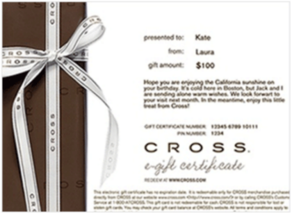그 후 Cross 는 판매와 마케팅의 귀재 월터 보스 (watter boss)에 의해 제2의 도약기를 맞게 된다.
그는 마케팅과 아이디어로 제품라인을 늘리는 동시에 다양한 색상과 디자인으로 디자인 면에서도 앞서갔다 이 시기에 Cross는 1946년 회사 창립 100 주년을 기념하여 센츄리 펜을 출시하였으며, 1968년에는 여성용 펜슬과 펜 등 시대의 트렌드에 맞는 펜을 제작하여 사랑을 받았다.
Cross의 경영 철학은 바로 디자인과 세공 기술의 완벽함이다. 하나의 완벽한 Cross 제품이 만들어지기 위해서는 기계 제작업자로부터 조립자, 리필 검사원 및 포장 담당자에 이르기까지 정성 어린 심혈을 기울이고 있다. 또한 하나 하나의 수작업과 각 과정마다의 철저한 테스트 과정을 통하여 제품을 만들어 나간다. 그리고, 완벽한 품질을 위하여 완성된 제품마다 평생 보증서 제도를 실시하고 있다.흐름을 이끌어 나가는 크로스
항상 그 시대의 흐름을 이끌어 나가는 Cross 는 기존의 전통적이고 클래식한 이미지에서 탈피하여 젊고 모던한 이미지로 변신을 꾀하고 있다.
오랜 기간의 CI 작업 끝에 2001년 새롭게 탄생한 Cross 의 새로운 로고는 젊음과 생기 발랄한 이미지를 형상화한 C-shape의 펜 모양을 나타내고 있다.
CI 변경 이후 컨템포러리하고 독특한 개성과 디자인의 ION과 Morph2 rollerball, Matrix 로 점점 젊은 소비자에게 가까이 다가가고 있다. 오늘날 Cross 는 고객들에게 항상 뛰어난 스타일과 품질의 제품으로 기억되고 있으며, 이제는 2002년 새롭게 출시하여 세간의 관심을 불러 일으켰던 시계로까지 제품군을 확대하여 필기구 전문 브랜드가 아닌 패션 브랜드로 도약할 준비를 하고 있다.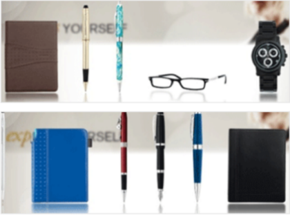 -

명예와 가치를 가장 소중히 여기는 정통 미국 만년필
1907년, 보석상을 경영하던 월터A 쉐퍼는 세계 최초로 진공 튜브를 이용한 만년필(미 특허권 896,861)을 제작함으로써 펜업계 일대 기술혁신을 가져왔습니다.
1913년 미국 Fort Madison 에 쉐퍼사를 설립한 후 약 100년의 시간 동안 대를 거듭하며 신뢰할 수 있는 펜을 만들어 왔습니다.세계적으로 우아하고 고전적인 쉐퍼만의 매력
1924년, 쉐퍼는 트레이드마크인 White Dot을 새기기 시작하였으며, 이후 모든 제품에는 쉐퍼의 전통과 장인 정신을 상징하는 White Dot 이 새겨지게 됐다.
쉐퍼의 펜은 세계적으로 우아하고 고전적인 쉐퍼만의 매력을 사랑하는 사람들에게 널리 이용되고 있습니다.
SHEAFFER는 정통 미국 만년필로서 명예와 가치를 가장 소중히 여기는 제품으로 자리매김 하였습니다. -
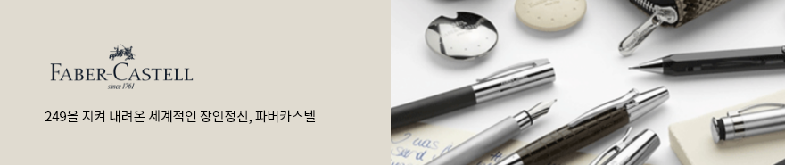
세계에서 가장 오래된 필기구의 명가
-
249을 지켜 내려온 세계적인 장인정신
1761년 독일에서 설립된 FABER - CASTERLL 는 세계에서 가장 오래된 필기구의 명가입니다. -
1세대카스파르 파버(1761~1784) (1761~1784)
1761년 캐비닛 제조업자였던 카스파르 파버가 스테인에서 연필을 제조하여 누렘베르그에 팔게 되면서 사업이 공식적으로 시작. -
2세대안톤 윌헬름 파버(1758~1810) (1784~1810)
회사 이름을 안톤 윌헬름의 이름을 따서 “A.W.FABER”로 함.
작은 크래프트 전문 샵을 운영하고 부동산을 인수하며 연필 사업 확장 -
3세대조지 레오날드 파버(1788~1839) (1810~1839)
조지 레오날드는 어려운 정치와 경제 시대에
연필 사업을 운영하게 되었고, 사업의 생존을 위협할 만한
급격한 생산량 감소와 분열을 감당하지 못했다.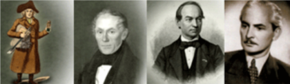 -
4세대로타 폰 파버(1817~1896) (1839~1896)
“초창기부터, 나의 관심사는 최고의 제품으로 세계 최상의 위치에 오르는 것이었다…”
현대적인 연필의 아버지로 불리며 또한 최초로 필기구에 브랜드 네임을 부여한 사람입니다. -
5세대윌헬름 폰 파버(1851~1893) (1877~1893)
예술가적인 기질을 가지고 있던 윌헬름은 로타 폰 파버의 외아들로 어린 두아들을 잃은 슬픔을 이기지 못해
1893년 젊은 나이에 세상을 떠남 그 후에 로타 폰 파버가 세상을 떠나기 전까지 다시 회사를 운영 -
6세대알렉산더 그라폰 파버-카스텔(1866~1928) (1900~1928)
현 회사 명인 파버-카스텔은 1898년 로타 폰 파버의 손녀인 바로니스 오틸리에
폰 파버와 독일의 유서 깊은 귀족 가문인 알렉산더 카스텔 루덴한센 백작의 결혼으로 확립되었습니다. -
7세대롤랜드 그라폰 파버-카스텔(1905~1978) (1928~1978)
1955년 유럽 자유 무역 국가에서 경쟁력을 유지하기 위해 아일랜드에 연필 공장을 세움 1961년 파버-카스텔 200주년 -
8세대로타 폰 파버 (1817~1896) (1839~1896)
“초창기부터, 나의 관심사는 최고의 제품으로 세계 최상의 위치에 오르는 것이었다…”
현대적인 연필의 아버지로 불리며 또한 최초로 필기구에 브랜드 네임을 부여한 사람입니다.
-
249을 지켜 내려온 세계적인 장인정신
-
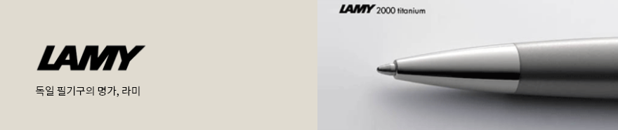
독일 필기구의 명가
라미는 1930년 하이델베르크에서 최초로 “C. Josef Lamy”에 의해 탄생.
라미는 독자적으로 필기구의 고품질을 위해 개발, 생산하는데 전력.
전형적으로 라미의 디자인은 세계 규격에 따랐을 뿐 아니라, 동시에 세계적으로 그 명성을 얻고 있습니다.
라미는 오랜 전통을 갖고 있으면서도 참신하고 독립적인 회사로 평가되고 있습니다.
사용자 계층을 만족시키는 혁신적인 기술과 디자인
라미는 독일의 필기구 시장의 선두주자일 뿐만 아니라 세계적 필기구의 주요 브랜드 중 하나로 알려져 있습니다.
라미는 기술과 디자인의 혁신을 통해 사용자 계층의 욕구를 최대한 만족 시키자는 것이 가장 큰 이념입니다.
“Form follows function” 처럼 디자인에 앞서 사용자가 가장 안정적이고 편안한 필기감을 느낄 수 있도록 기능적인 면을 먼저 생각한다. 또한 라미는 오직 독일 하이델베르크에서만 제조 됩니다.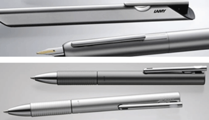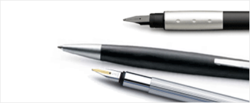펜촉 부분에서는 약 70여년의 생산 노하우를 가지고 타브랜드와 월등한 필기감으로 국내외에서 이미 입증되었을 뿐 아니라, 라미는 OEM 방식이 아닌 자사에서 직접 생산을 통해, 약 13km의 필기용량의 잉크가 내재되어 있다.
화려한 외형에 치우치지 않고 실용적이며 사용하기 편한 디자인으로 처음 만년필을 사용하는 초년생, 디자인, 설계, 사무원 및 공무원에 이르기까지 광범위한 사용을 허용한다.세계에서 누가 LAMY를 사용하나요?
베를린 정부 공식 사무용품은 LAMY / Daimler Chrysler의 회장 “Scherempp” : Swift 모델 / 월트 디즈니 스튜디오의 디자이너들 대부분 :
Safari 모델 / 말레이시아 대통령 “Dr.Mahatir” : Swift 모델 / 수많은 저널리스트, 작가, 예술가 : Tri, Twin Pen -
아름다운 필기구 CARAN D’ ACHE
카렌다쉬는 러시아어로 연필이라는 뜻으로 1924년 스위스의 유능한 사업가인 아놀드 쉬바이쩌가 1915년 설립한 “Ecrido pencil”을 인수 한 후,
그가 평소 존경해 왔던 러시아계의 유명한 디자이너이자 풍자 화가인 Emmanuel Poire가 습관적으로 Karandasch를 사용하고 있음을 착안
“CARAN d’ ACHE swiss pencil” 공장으로 개명했다.
세계 최초로 수용성 색연필을 만들어 낸 그는 최고의 품질을 위해 엄격한 테스트를 거치는 등의 세계 최고의 고급 필기구를 만들겠다는 일념으로
볼펜의 버튼 조차도 10만회나 테스트를 거치는 등의 명품으로서 꾸준히 노력한 결과 “Life time international guarantee” 채택.세계 최고의 고급 필기구 CARAN D’ ACHE
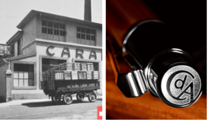세계 최초로 수용성 색연필을 만들어 낸 그는 최고의 품질을 위해 엄격한 테스트를 거치는 등의 세계 최고의 고급 필기구를 만들겠다는 일념으로 볼펜의 버튼 조차도 10만회나 테스트를 거치는 등의 명품으로서 꾸준히 노력한 결과 “Life time international guarantee” 채택.
80여년이 지난 오늘날에는 카렌다쉬사가 스위스에서 유일하게 고급필기구와 액세서리 및 색연필등의 화방용품을 생산하는 회사가 되었다.
1929년 금과 은을 이용해 필기구를 생산할 수 있는 시스템을 구축했던 이회사는 육각형의 “FIXPENCIL” 을 세계 최초로 만들면서 돌파구를 마련함과 동시에 획기적인 해로 기억 된다. -
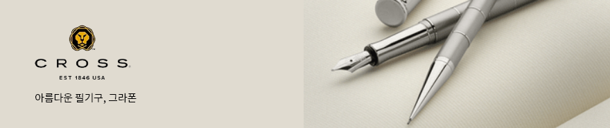
단순함과 디자인의 표본이 되는 매력적인 필기구
가는 흑연 심을 싼다는 생각은 몇 백년동안 내려오는 생각입니다. 1761년에 연필공장을 세울 때 이것은 새로운 것이 아니었습니다.
현대에도 적용되고 있는 연필의 길이와 직경의 강도를 위한 표준을 마련했고, 단순함과 디자인의 표본이 되는 매력적인 제품들을 지속적으로
만들었습니다.미학적 외형과 높은 수준의 기능성
파버카스텔은 가장 오래된 나무연필 제조회사일 뿐 아니라 세계에서도 가장 잘 알려진 색연필 브랜드입니다. 그리고 이 제품은 아직도 150년 전 모습 그대로 입니다.
조상들이 생각했던 최고급 필기구에 대한 아이디어가 “그라폰 파버 카스텔” 브랜드로 실현되었습니다. 단순함 속에 화려함, 선별된 소재의 조화로운 매치, 미학적 외형과 높은 수준의 기능성을 구체화했습니다.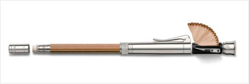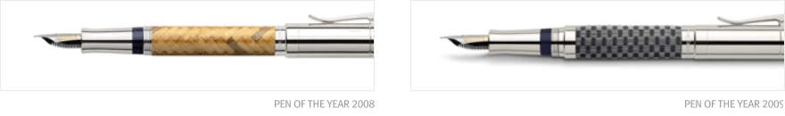 -
스위스 밀리터리의 시작
SWISS MILITARY는 SWISS ARMY와 함께 스위스 국방부가 보유한 세계적인 브랜드이며,
스위스 밀리터리 브랜드는 100여년 전 스위스 국방부에 군수물품을 공급하던 Boegi가에서 시작되었습니다.최고의 성공 브랜드, 스위스 밀리터리
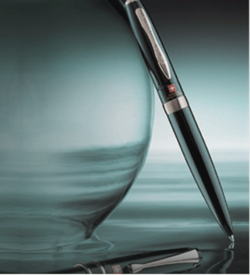열악한 산악 속에서 부족한 자원과 특별한 산업이 없던 이들은 자국의 용맹하고 충성스러운 민족성을 인정받아 스위스 군대를 당시 절대 군주시대의 유럽의 왕가와 친위대 및 로마 교황청에 용병으로 파견하였습니다. 정부는 이러한 스위스 용병들에게 자국에서 생산되던 시계, 칼, 펜 등을 길드에서 공급받아 제공하였습니다. 이 길드에서 파생된 것이 스위스 밀리터리 시계와 스위스 아미 나이프의 양대 브랜드로 양분되었으며, 내륙의 산악도시 Moutier에 위치한 Boegi가는 정밀한 제품의 우수성을 인정 받아 스위스 국기를 로고로 사용하였고, 스위스 밀리터리 브랜드를 전세계적으로 사용할 수 있는 권리를 스위스 정부로부터 받았습니다.
스위스 밀리터리는 시계로부터 시작하여 그 영역을 넓혀 라이터, 고급 볼펜, 지갑, 가방 등을 10년 전부터 상품을 시장에 내놓았으며, 스위스 공항에서는 현재 가장 많이 팔리는 제품입니다. 현재 전세계적으로 스위스 밀리터리 제품들은 미국, 영국, 캐나다, 브라질, 일본, 프랑스와 아시아 국가 등의 20여개 국에서 판매되고 있으며, 한국에서는 스위스 밀리터리 코리아에 의해 2000년 9월부터 시장조사를 거친 후 2005년 5월 정식 브랜드로 출범하였습니다. 스위스 밀리터리는 명품 볼펜과 남성용 소품들을 한국시장에 도입하여 2005년 펜 업계 최고의 성공 브랜드로 떠올랐으며, 현재 20여 개의 전국 유명 백화점에서 판매되고 있습니다. -

극세필의 명품 필기구 PLATINUM
한글 필기에 강한 극세필의 지존 PLATIUM.
만년필 고유의 부드러운 필기감과 잉크 흐름까지 느낄 수 있는 PLATIUM 만년필, 시간이 흐를수록 PLATIUM 만년필의 진수를 느끼실 수 있습니다.
품질 좋은 만년필을 저렴하게 구매하고 싶어하는 소비자의 바램을 잘 알고 있기에 단연 최고의 만년필인 PLATIUM이 다른 누구도 흉내내지 못하는 UEF 부터 굵은 촉까지 생산하면서, 실용적인 디자인에 가벼움까지, 이제 그 어떤 나라보다 더 저렴한 가격에 국내에서 PLATIUM 만년필을 만나실 수 있습니다.Introduction of PLATIUM
-
1919년회사설립(필기구 제조)
-
1924년플래티넘 브랜드 사용
-
1930년Maki-e 제품 생산
-
1948년수성볼펜 생산
-
1957년잉크 카트리지 만년필 제조
-
1978년#3776 만년필 출시
-
1981년뉴욕 현대 미술 박물관에 Platinum의 Z펜을 제조
-
1994년저가 필기구 제조
-
2008년90주년 만년필 생산
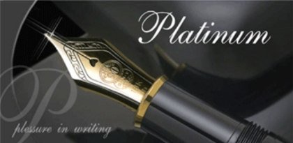 -
-
선박 엔지니어가 디자인
세일러 만년필은 1911년 일본 히로시마 출신이 규고로 사카타씨에 의해 창업되었다.
펜촉의 시조국인 영국인 친구로부터 영향을 받아 자신이 직접 디자인한 만년필을 만들기로 하였고
당시 선박 엔지니어였던 사카타씨 sailor(항해사)라는 이름을 붙이게 되었다고 한다.동양 문자에 적합한
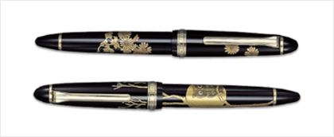세일러 만년필의 특징은 한 가는 촉이면서도 풍부하고 안정적인
잉크흐름을 가지고 있어 동양권에서 사용하는 문자를 쓰기에
적합펜이라고 하겠다. -

PIERRE CARDIN
About Apierre Cardin 1922년 이탈리아 베니스 태생의 프랑스인이다. 건축을 공부했으나 패션에 대한 열정으로 1946년부터는 Christian Dior사에서
재단사로 근무, Yves Saint Lauren, Guy Laroche와 더불어 패션계의 “젊은 3대 프린스”로 불리며 역량을 과시하기 시작했다.자신의 이름을 라이센싱 한 첫 번째 디자이너
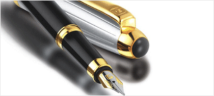1953년 Dior사에서 독립하여 자신의 Collection을 통해 주목을 받은 이래 그는 옷감의 마술사라고 불리울 정도의 전위적인 재능을 유감없이 발휘하여, 1966년에는 누드 룩, 메탈 액세서리, 유니섹스 모드, 우주복 Suite 등의 혁명적인 패션을 창출해냈다. 특히 Pierre Cardin 자신의 이름을 상표화하여 경영, 패션, 잡화 뿐만 아니라 와인, 생활용품, 안경, 문구에 이르기까지 완벽하게 라이센싱 한 첫 번째 디자이너이다.현대적 미래지향적 패션의 가치 기준
그는 아직도 패션을 리드하는 패션계의 대부로서의 위치를 굳건히 하고 있으며, 그가 뛰어난 안목과 통찰력을 바탕으로 창조해 낸 디자인들은, 모두 현대적 미래지향적 패션의 가치 기준이 되고 있다. 그는 여전히 말한다.
“나는 강하고, 지치지 않습니다. 내 이름을 팔 수 있는 한, 일 하면서 죽으렵니다.”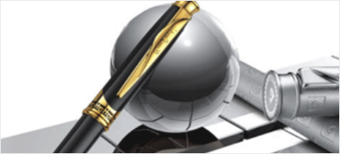
교보 페이지 - 디자인 확인


교보 페이지 - 디자인 확인


교보 페이지 - 디자인 확인

-

- 1년 이내에 구입한 제품을 새 제품으로 교환이 가능한가요?

-
- - 상품의 이상 유무에 따라 다르게 적용 됩니다.
-
- 자체적인 불량이 있는 경우에는 구매 후 1년 이내에 무상으로 교체(제품, 부품) 및 수리가 가능하십니다.
그러나 고객님의 부주의로 인한 제품의 문제일 경우에는 비용이 부과됩니다.
-
- 제품 A/S 받고자 합니다. 맡기면 A/S 기간이 얼마나 걸리나요?
-
- - 인터넷 교보문고 GIFT에 등기나 택배로 보내시면 15일 이내에 가능합니다.
- - 별도의 사유로 인한 A/S 지연 시 통보 드립니다.
- - A/S 사항은 매커니즘 이상 및 작동상의 불량으로 인한 경우에 해당되며 흠집이나 도금은 A/S에 해당하지 않습니다.
-
- 1년 이내에 구입한 제품을 새 제품으로 교환이 가능한가요?
- - 제품 A/S시 비용이 발생하나요?
-
- 제품 A/S를 받았는데도 계속 같은 문제가 발생하면 어떻게 하나요?
- - 구매 후 1년 이내의 제품에 대해서는 같은 문제가 반복적으로 발생할 경우 이상 부위의 부속 혹은 제품을 무상 혹은 유상으로 교환해 드립니다.
-
- 컨버터도 A/S가 가능한가요?
-
- 컨버터는 자체적으로 압축된 상태로서 분리가 되지 않습니다.
따라서,컨버터가 고장이 나거나 훼손된 경우 수리는 불가능 합니다.
-
- 캡 부위가 금이 갔어요.A/S가 가능한가요?
-
- - 캡의 파손으로 인해 꽉 잠기지 않으면 캡 안쪽의 진공상태 유지가 되지 않으므로 잉크 누수나 사용시 잉크가 나오지 않는 현상이 발생 될 수 있기 때문에 교환해 주어야 합니다.
- - 교체에 따른 비용은 별도 안내 드립니다.